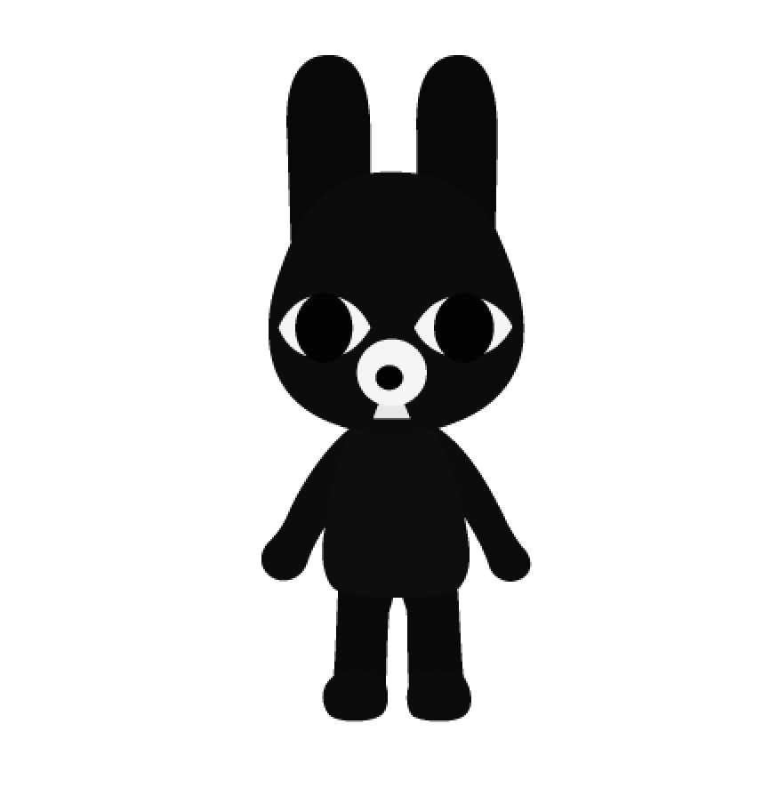
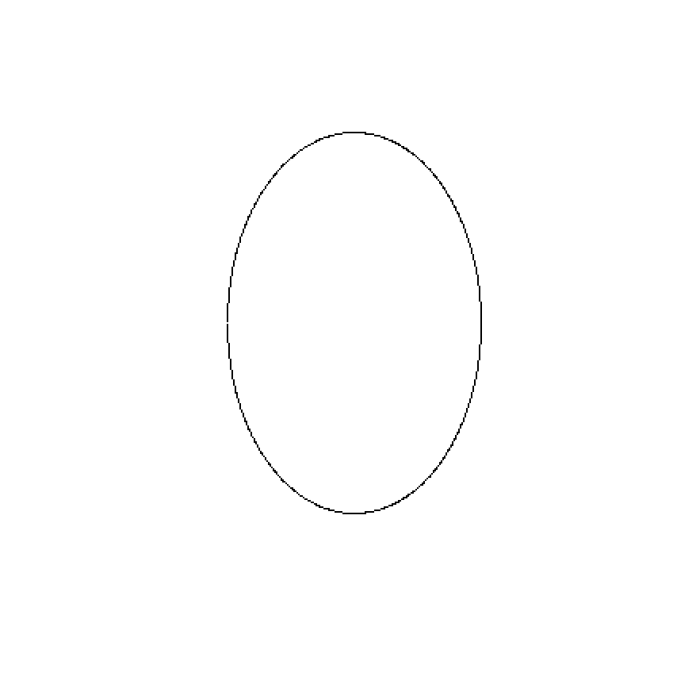
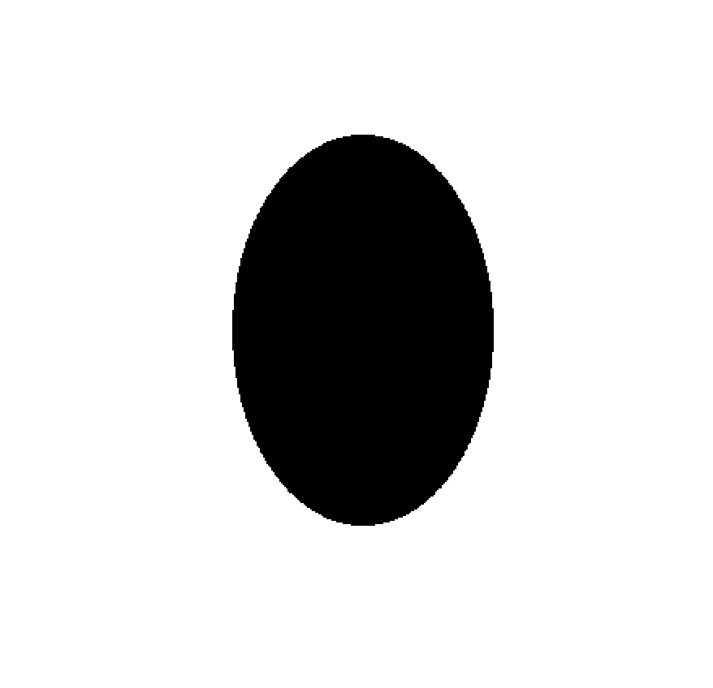
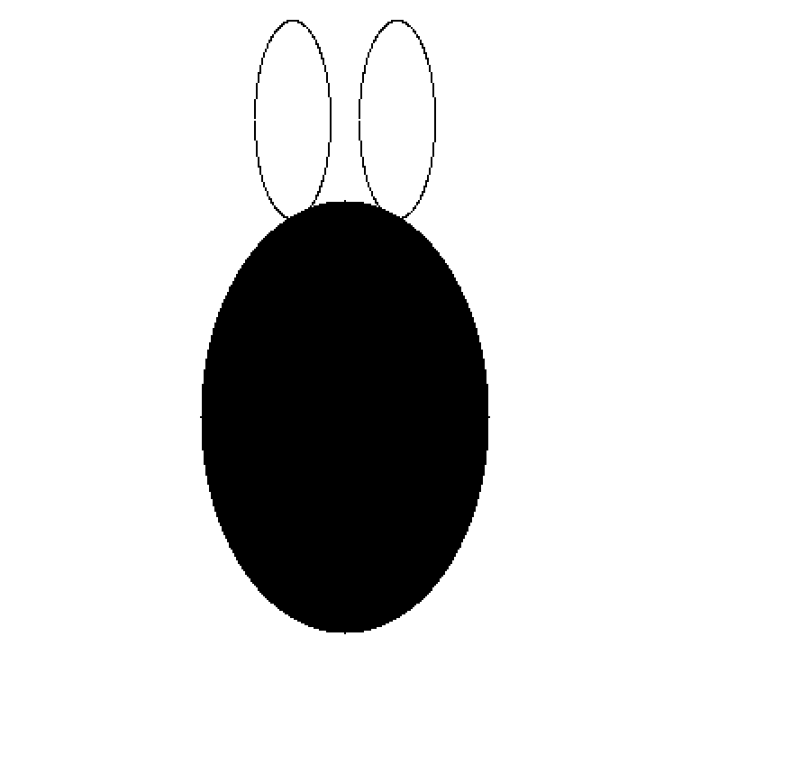
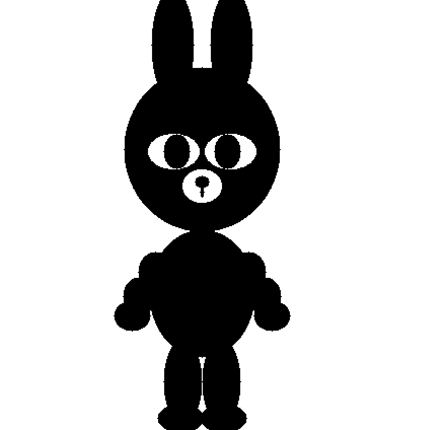
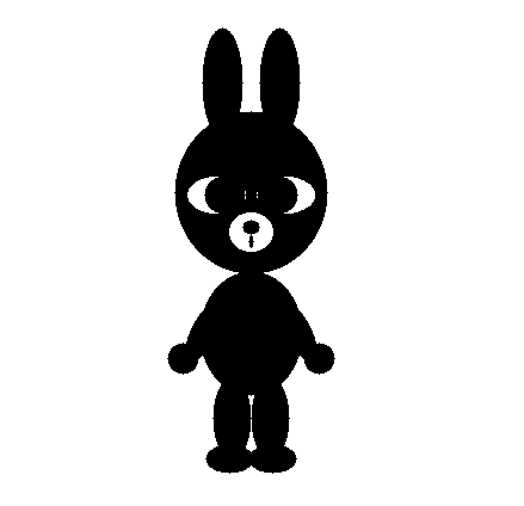
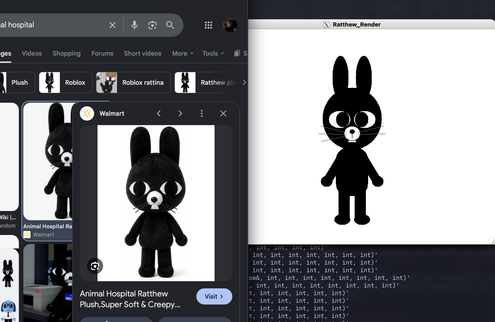
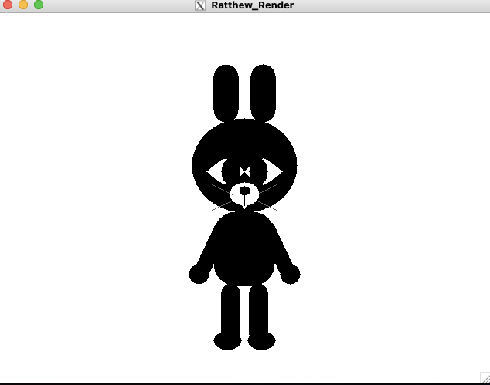

2D graphics class project
Ratthew
Built one shape at a time.
A character study made in C++ with X11. I began with simple ellipses, then worked through the proportions, facial features, and curves until the shapes came together.
Follow the drawing process- Language
- C++
- Display
- X11 graphics
- Focus
- 2D shape construction

Drawing process
From an ellipse to a character.
Each pass added a little more structure. The screenshots follow the work from a first outline to a smoother final silhouette.
-

Start with an outline
I started with an ellipse outline.
-

Fill the form
Filling it gave me a basic shape to build with.
-

Lay out the head
A few ellipses set the first head-and-ears proportions.
-

Build the silhouette
Stretched and rotated ellipses formed the body and limbs, though some pieces still felt separate.
-

Refine the face
Adjusting the proportions, eyes, and muzzle made the character more recognizable.
-

Keep the reference close
A browser view of the character reference sits beside the open Ratthew_Render X11 window.
-

Test more primitives
Lines, capsules, rounded rectangles, triangles, and pointed eye shapes added detail, but this pass felt less successful.
-
Smooth the contours
Curved outlines and extra samples gave the edges a smoother finish.
Graphics concepts
Simple shapes, carefully adjusted.
The project grew through small decisions about how each form should sit beside the next.
-
Stretch and rotate
Reuse ellipses at different proportions to block in the head, body, arms, and legs.
-
Layer the details
Build the face from simple shapes, then compare how the eyes and muzzle affect recognition.
-
Refine the curves
Try several outline styles and add samples to make the final edges look smoother.